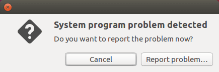
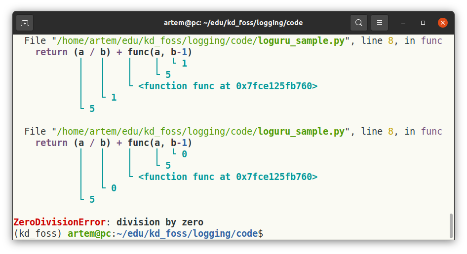

Логирование. Что это и в чем его польза?¶
Что значит логирование? Логирование (или журнал событий) является важным инструментом при разработке программного обеспечения. Логирование нужно нам для того, чтобы записать шаги и результат выполнения различных участков приложения для дальнейшего использования с целью анализа или поиска ошибок.
Мотивация¶
При использовании логирования мы можем не гадать, что именно произошло в нашем приложении, а опереться на конкретную информацию. При этом нужно помнить, что переизбыток информации так же вреден, как и ее недостаток: в куче разнородных сообщений, часть из которых являются бесполезными, а часть избыточными, ошибку найти еще можно, а вот причины, которые к ней привели, уже гораздо сложнее. Речь идет о записи специального текстового файла (лога) с особым образом структурированной информацией о работе программы. Каждое сообщение может сопровождаться метками, самая простая из которых — метка времени, для удобного поиска и группировки.
Зачем нужно логирование?¶
Инструменты для логирования можно рассматривать как отдельную систему при разработке ПО, при этом она не менее важна, чем, например, система контроля версий. При этом системами контроля версий принято пользоваться почти всегда, а системе логирования не уделяется достаточного внимания, так как ее поддержка в коде приложения (все это дополнительные строчки кода) не несет дополнительного функционала, если все идет по плану. Однако логи очень полезны. Если все пошло не так, как должно, и если их нет, единственный способ найти ошибку — работать с пользователем и воспроизводить проблему.
Существует несколько сценариев, в которых ведение логов необходимо:
Отладка Логи помогают разработчикам понимать и диагностировать проблемы в их ПО, предоставляя подробную информацию о том, что происходит внутри приложения. Особенно это полезно, когда приложение работает с данными от пользователей, когда невозможно предусмотреть все возможные ситуации заранее. Эта информация может быть использована для выявления и исправления ошибок. Всем знакомо подобное окно, когда происходит ошибка, которую не предусмотрел разработчик. В таком окне обычно есть кнопка «Сообщить о проблеме», если ее нажать, разработчику уйдет сообщение об ошибке и часть логов.

Примечание об ошибках, появление которых предусмотрено, можно сообщить текстом и предложить варианты исправления. Это можно тоже отправить в логи
Посмотреть когда-либо отправленные системой сообщения об ошибках на Ubuntu можно, выполнив команду в терминале:
xdg-open https://errors.ubuntu.com/user/`sudo cat /var/lib/whoopsie/whoopsie-id`
Мониторинг Этот сценарий предполагает использование логов для выявления процессов, которые не связаны с ошибками, но могут означать другую проблему. Например, если нагрузка на сервер (число одновременных подключений) выросла в 10 раз за короткий промежуток времени. Возможно, происходит какая-то атака. Так логи могут использоваться для мониторинга работоспособности, а также для выявления потенциальных проблем. Логи также можно использовать для отслеживания состояния важных процессов, например, миграции базы данных или обновления системы.
Proof of operation В некоторых случаях ведение журнала логов просто необходимо для демонстрации работоспособности приложения и требуется в соответствии с нормативными актами или отраслевыми стандартами. Логи могут служить доказательством соответствия требованиям и использоваться для демонстрации того, что ПО работает согласно установленным политикам и процедурам.
Аудит Логи могут использоваться в целях аудита, чтобы помочь убедиться, что система используется правильно, а также для обнаружения и предотвращения несанкционированного доступа или неправильного использования. В данном случае мы можем хранить время входа в систему, локацию, откуда произведен вход, и, например, выяснить, не пользуется ли часть сотрудников ключами других.
Уровни логирования¶
Заниматься логированием необходимо с самого начала разработки, чтобы во время последующей эксплуатации мы могли собирать наиболее полную информацию о работе ПО. Даже при хорошо продуманном логировании в файлах-логах копится очень много информации. Чтобы систематизировать важную информацию и упростить ее последующее использование, существуют уровни логирования. Уровни логирования предусмотрены не только в качестве меток для поиска и выборки событий, но и используются самой библиотекой логирования для того, чтобы можно было оставить вывод только логов определенного уровня. Всего выделяют 5 основных:
Trace Уровень Trace используется для регистрации самых мелких событий, которые позволят отследить каждый шаг алгоритма или другую подобную информацию. Как правило, это не требуется, поскольку алгоритмы обычно хорошо известны и покрываются тестами. Но если вам нужен очень подробный отчет по каждой строке кода, то вам сюда. Не забудьте запастись достаточным дисковым пространством для файлов-логов.
Debug Уровень Debug используется для регистрации подробной информации, которая в основном предназначена для разработчиков. Сообщения на этом уровне менее подробны, чем на Trace, но не настолько, чтобы быть полезны кому-то кроме разработчиков. Отладочные сообщения обычно используются на этапе разработки и тестирования, чтобы помочь понять, что происходит внутри системы. При сборке проекта для пользователей этот уровень отключают, и события уровня Debug не собираются на машинах пользователей.
Info Уровень Info используется для регистрации информации о нормальных, ожидаемых событиях. Информационные сообщения могут дать представление о поведении системы и использоваться в целях мониторинга. Например, так можно собирать количество подключений от пользователя за определенный промежуток времени, например, 1 час.
Warning Уровень Warning используется для регистрации необычных или неожиданных событий, но необязательно ошибок. Предупреждения могут указывать на потенциальные проблемы, которые необходимо устранить и которые уже могут привести к более серьезным последствиям. Например, падение скорости передачи данных ниже уровня, когда это начинает влиять на работу приложения.
Error Уровень Error используется для регистрации событий, которые представляют собой сбой или непредвиденную ситуацию. Сообщения об ошибках могут указывать на проблему, которую необходимо устранить, например, падение канала связи так, что данные пользователя вообще не будут передаваться.
Fatal Уровень Fatal используется для регистрации наиболее серьезных событий, таких как полный сбой системы или критическая проблема безопасности. Критические сообщения указывают на то, что требуется немедленное внимание для предотвращения или устранения серьезной проблемы. К таким событиям можно отнести получение файла с данными, у которого не сходится контрольная сумма, это может привести не только к неудобству пользователей, но и к потерям со стороны компании-разработчика.
Благодаря разным уровням ведения журнала программное обеспечение для ведения журнала предоставляет способ фильтровать регистрируемые события, что облегчает фокусировку на наиболее важных событиях.
Основы грамотного логирования¶
Чтобы получить файлы логирования, которые будут удобными в последующей работе, следует грамотно подойти к процессу их создания:
Логировать все важные события, будь то запуск приложения, остановка или возобновление транзакций, успешная регистрация, открытие на чтение файла, ошибки.
Исключить из описания события часто повторяющиеся слова, что существенно упростит поиск нужной информации в будущем.
Добавлять к логам теги: переходя по ним, вы сможете находить данные, даже если они находятся в разных категориях. Теги могут относиться как бизнес-логике (ПРОДАЖА, РЕГИСТРАЦИЯ), так и внутренним процессам в коде (ПОДКЛЮЧЕНИЕ_К_БД, ЧТЕНИЕ_ФАЙЛА), и любые другие осмысленные варианты.
Использовать только нужную информацию: лишние сведения будут только засорять логи и делать работу с ними медленнее даже при автоматической обработке событий.
Использовать типы и уровни логирования осознанно. Это упрощает использование журнала логов для последующей аналитики и визуализации.
Следуя этим основам грамотного ведения журнала программного обеспечения, можно гарантировать, что данные журнала собираются так, чтобы облегчать отладку и мониторинг вашего ПО.
Библиотеки логирования для языка программирования Python¶
Существует несколько популярных библиотек ведения журнала для Python:
logging¶
Встроенный модуль ведения журнала в стандартной библиотеке Python — это гибкая и мощная библиотека ведения логов, которая предоставляет множество функциональных возможностей «из коробки».
(код):
import logging
import sys
import time
from logging.handlers import TimedRotatingFileHandler
FORMATTER_STRING = "%(asctime)s — %(name)s — %(levelname)s — %(message)s"
FORMATTER = logging.Formatter(FORMATTER_STRING)
LOG_FILE = "/tmp/my_app.log" # use fancy libs to make proper temp file
def get_logger(logger_name):
logger = logging.getLogger(logger_name)
logger.setLevel(logging.INFO)
console_handler = logging.StreamHandler(sys.stdout)
console_handler.setFormatter(FORMATTER)
logger.addHandler(console_handler)
file_handler = TimedRotatingFileHandler(LOG_FILE, when='midnight')
#file_handler.setFormatter(FORMATTER)
logger.addHandler(file_handler)
return logger
if __name__ == "__main__":
logger = get_logger("my_app_logger")
logger.info("Start logging")
logger.debug("Some debug message")
while True:
try:
time.sleep(1)
logger.info("Keep logging")
except KeyboardInterrupt:
logger.fatal("User get bored")
break
Давайте поймем, что здесь происходит. Мы создаем логгер и выводим логи на уровне INFO в файл и в терминал. В файле логи записываются без форматирования. Выводим сообщение о критической ошибке, когда пользователь нажмет Ctrl-C и прервет выполнение программы. Обратите внимание, что сообщения уровня DEBUG не выводятся, так как мы установили уровень для вывода не ниже INFO logger.setLevel(logging.INFO). Ниже описаны объекты, которые мы используем в коде:
FORMATTER — определяет, как будет выглядеть строка события в логах. В него мы передаем шаблон, который хотим реализовать.
LOG_FILE — определяет, в какой файл мы будем писать логи. По умолчанию мы выводим в стандартный вывод stderr, и если хотим видеть логи на экране и сохранять в файл, должны явно это указать.
get_logger() — создает объект класса Logger, который мы будем использовать для логирования.
console_handler — обработчик вывода в терминал, по умолчанию используется stderr, поэтому явно говорим, что хотим видеть сообщения в stdout.
file_handler — обработчик вывода логов в файл, обратите внимания, что мы закомментировали форматирование, поэтому сообщения будут записаны в стандартной форме.
logger.info() — используем для вывода логов на уровне INFO. Другие уровни имеют соответствующие функции для вывода.
Запустим приложение и увидим вывод:
artem@pc:~$ python ./logging_sample.py
2023-02-14 10:05:40,074 — my_app_logger — INFO — Start logging
2023-02-14 10:05:41,075 — my_app_logger — INFO — Keep logging
2023-02-14 10:05:42,076 — my_app_logger — INFO — Keep logging
^C2023-02-14 10:05:42,392 — my_app_logger — CRITICAL — User get bored
В файле мы видим те же самые сообщения, но не снабженные никакой дополнительной информацией:
artem@pc:~$ cat /tmp/my_app.log
Start logging
Keep logging
Keep logging
User get bored
structlog¶
Это библиотека расширяет встроенный модуль Python для ведения логов с дополнительными функциями, такими как возможность прикреплять дополнительные данные к сообщениям или манипулировать сообщениями до их отправки.
Рассмотрим слегка модифицированный пример с сайта structlog:
(код):
import logging
import sys
import structlog
FORMATTER_STRING = "%(asctime)s — %(name)s — %(levelname)s — %(message)s"
FORMATTER = logging.Formatter(FORMATTER_STRING)
def get_logger(logger_name):
logger = logging.getLogger(logger_name)
logger.setLevel(logging.INFO)
console_handler = logging.StreamHandler(sys.stdout)
console_handler.setFormatter(FORMATTER)
logger.addHandler(console_handler)
return logger
def replace_user(_, __, event_dict):
user = event_dict.get("user")
if user:
# we can access data base here for user_token
# for now keep it fake
user_token = "some_string_that_we_can_learn_username_from"
event_dict["user"] = user_token
return event_dict
def censor_password(_, __, event_dict):
pw = event_dict.get("password")
if pw:
event_dict["password"] = "*CENSORED*"
return event_dict
log = structlog.wrap_logger(
get_logger("my_app_logger"),
processors=[
censor_password,
replace_user,
structlog.processors.JSONRenderer(indent=1, sort_keys=True),
],
)
log.warning("something", password="secret")
log.warning("something", user="Ivan")
Здесь мы используем get_logger() как раньше. Убрали вывод в файл, так как он не важен для демонстрации. Сделали обертку для логгера и определили, что должно происходить с данными, если они передаются для логирования. Мы видим, что здесь нам необязательно определять строку форматирования для всех данных, данные передаются по ключам, и это дает нам возможность получить читаемый вывод и сделать что-нибудь со значениями до вывода. В примере ниже мы хотим заменить имена на что-то, что позволит нам восстановить эти имена, например, если мы держим соответствие имен и некоторых токенов (если требования к личным данным не позволяют нам публиковать имена людей). Пароли мы хотим скрыть полностью. Для манипуляции с данными в логгер от structlog мы можем определить несколько обработчиков (processors), в которых описано то, что мы хотим сделать.
censor_password — функция-обработчик, которая скроет пароль, если он присутствует в данных, заменив на
*CENSORED*.replace_user — функция-обработчик, которая заменит имя пользователя.
2023-02-14 10:53:42,214 — my_app_logger — WARNING — {
"event": "something",
"password": "*CENSORED*"
}
2023-02-14 10:53:42,214 — my_app_logger — WARNING — {
"event": "something",
"user": "some_string_that_we_can_learn_username_from"
}
loguru¶
Эта библиотека сделает ваш журнал более простым в использовании. Loguru предоставляет простой и интуитивно понятный интерфейс для протоколирования сообщений и поддерживает расширенные функции, такие как фильтрация журналов, цветной вывод и обработка исключений.
Пример из статьи позволяет понять возможность loguru:
(код):
import sys
from loguru import logger
logger.remove(0)
logger.add(sys.stderr, backtrace=True, diagnose=True)
def func(a, b):
return (a / b) + func(a, b-1)
def nested(c):
try:
func(5, c)
except ZeroDivisionError:
logger.exception("Division by zero error!")
nested(1)
При запуске мы получим такой вывод:

logbook¶
Это библиотека ведения логов, которая разработана таким образом, чтобы быть быстрой и эффективной, и предоставляет такие функции, как ведение логов с учетом контекста, гибкое форматирование журнала и поддержка различных уровней ведения журнала.
Как видно, все библиотеки имеют почти одинаковый функционал. Лучшая библиотека ведения журнала для вашего проекта будет зависеть от ваших конкретных потребностей.
Централизация логов¶
Централизация логов относится к практике сбора данных журнала из нескольких источников и хранения их в центральном хранилище. Это облегчает управление всей информацией и ее отслеживание, так что вы можете использовать ее для решения проблем и убедиться, что все работает правильно. Наличие всех логов в одном месте также повышает безопасность и помогает уберечь информацию от потери. И это также может ускорить и упростить поиск и устранение проблем, потому что вам не нужно просматривать информацию из множества разных мест.
Существуют различные способы централизации логов, но цель всегда состоит в том, чтобы иметь всю информацию в одном месте, к которому легко получить доступ и которым можно пользоваться.
Существует несколько способов централизации логов, включая использование централизованных систем ведения журнала, таких как Elastic Stack, Logstash или Graylog, или с помощью облачных служб ведения журнала, таких как Google Stackdriver. Наилучший подход к централизации данных журнала будет зависеть от конкретных потребностей.
Мы советуем обратить внимание на стек ELK для централизации логов.
Вывод¶
Подведем итог: ведение логов является важнейшим компонентом разработки и эксплуатации программного обеспечения, которое дает ценную информацию. Логирование дает возможность быстро находить проблемы и их источники, устранять их, выявлять конфликты в конфигурационных файлах и следить за безопасностью.